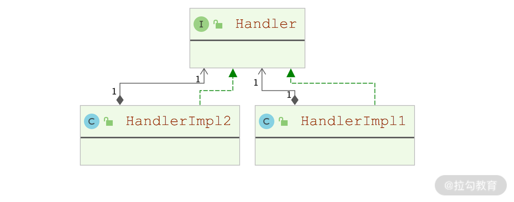

- 00 开篇词 领略 MyBatis 设计思维，突破持久化技术瓶颈.md.html
- 01 常见持久层框架赏析，到底是什么让你选择 MyBatis？.md.html
- 02 订单系统持久层示例分析，20 分钟带你快速上手 MyBatis.md.html
- 03 MyBatis 源码环境搭建及整体架构解析.md.html
- 04 MyBatis 反射工具箱：带你领略不一样的反射设计思路.md.html
- 05 数据库类型体系与 Java 类型体系之间的“爱恨情仇”.md.html
- 06 日志框架千千万，MyBatis 都能兼容的秘密是什么？.md.html
- 07 深入数据源和事务，把握持久化框架的两个关键命脉.md.html
- 08 Mapper 文件与 Java 接口的优雅映射之道.md.html
- 09 基于 MyBatis 缓存分析装饰器模式的最佳实践.md.html
- 10 鸟瞰 MyBatis 初始化，把握 MyBatis 启动流程脉络（上）.md.html
- 11 鸟瞰 MyBatis 初始化，把握 MyBatis 启动流程脉络（下）.md.html
- 12 深入分析动态 SQL 语句解析全流程（上）.md.html
- 13 深入分析动态 SQL 语句解析全流程（下）.md.html
- 14 探究 MyBatis 结果集映射机制背后的秘密（上）.md.html
- 15 探究 MyBatis 结果集映射机制背后的秘密（下）.md.html
- 16 StatementHandler：参数绑定、SQL 执行和结果映射的奠基者.md.html
- 17 Executor 才是执行 SQL 语句的幕后推手（上）.md.html
- 18 Executor 才是执行 SQL 语句的幕后推手（下）.md.html
- 19 深入 MyBatis 内核与业务逻辑的桥梁——接口层.md.html
- 20 插件体系让 MyBatis 世界更加精彩.md.html
- 21 深挖 MyBatis 与 Spring 集成底层原理.md.html
- 22 基于 MyBatis 的衍生框架一览.md.html
- 23 结束语 会使用只能默默“搬砖”，懂原理才能快速晋升.md.html
- 捐赠
20 插件体系让 MyBatis 世界更加精彩
插件是应用程序中最常见的一种扩展方式，比如，在Chrome 浏览器上我们可以安装各种插件来增强浏览器自身的功能。在 Java 世界中，很多开源框架也使用了插件扩展方式，例如，Dubbo 通过 SPI 方式实现了插件化的效果，SkyWalking 依赖“微内核+插件”的架构轻松加载插件，实现扩展效果。
MyBatis 作为持久层框架中的佼佼者，也提供了类似的插件扩展机制。MyBatis 将插件单独分离出一个模块，位于 org.apache.ibatis.plugin 包中，在该模块中主要使用了两种设计模式：代理模式和责任链模式。
插件模块使用的代理模式是通过 JDK 动态代理实现的，代理模式的基础知识以及 JDK 动态代理的核心原理我们已经在前面《06 | 日志框架千千万，MyBatis 都能兼容的秘密是什么？》中介绍过了。下面我们就重点来看一下责任链模式的基础知识。
责任链模式
我们在写业务系统的时候，最常用的协议就是 HTTP 协议，最常用的 HTTP Server 是 Tomcat，所以这里我们就结合 Tomcat 处理 HTTP 请求的场景来说明责任链模式的核心思想。
HTTP 协议可简单分为请求头和请求体两部分，Tomcat 在收到一条完整的 HTTP 请求时，也会将其分为请求头和请求体两部分进行处理的。不过在真正的 Tomcat 实现中，会将 HTTP 请求细分为更多部分，然后逐步进行处理，整个 Tomcat 代码处理 HTTP 请求的实现也更为复杂。
试想一下，Tomcat 将处理请求的各个细节的实现代码都堆到一个类中，那这个类的代码会非常长，维护起来也非常痛苦，可以说是“牵一发而动全身”。如果 HTTP 请求升级，那就需要修改这个臃肿的类，显然是不符合“开放-封闭”原则的。
为了实现像 HTTP 这种多部分构成的协议的处理逻辑，我们可以使用责任链模式来划分协议中各个部分的处理逻辑，将那些臃肿实现类拆分成多个 Handler（或 Interceptor）处理器，在每个 Handler（或 Interceptor）处理器中只专注于 HTTP 协议中一部分数据的处理。我们可以开发多个 Handler 处理器，然后按照业务需求将多个 Handler 对象组合成一个链条，从而实现整个 HTTP 请求的处理。
这样做既可以将复杂、臃肿的逻辑拆分，便于维护，又能将不同的 Handler 处理器分配给不同的程序员开发，提高开发效率。
在责任链模式中，Handler 处理器会持有对下一个 Handler 处理器的引用，也就是说当一个 Handler 处理器完成对关注部分的处理之后，会将请求通过这个引用传递给下一个 Handler 处理器，如此往复，直到整个责任链中全部的 Handler 处理器完成处理。责任链模式的核心类图如下所示：

责任链模式核心类图
下面我们再从复用的角度看一下责任链模式带来的好处。
假设我们自定义了一套协议，其请求中包含 A、B、C 三个核心部分，业务系统使用 Handler A、Handler B、Handler C 三个处理器来处理这三部分的数据。如果业务变化导致我们的自定义协议也发生了变化，协议中的数据变成了 A、C、D 这三部分，那么我们只需要动态调整构成责任链的 Handler 处理器即可，最新的责任链变为 Handler A、Handler C、Handler D。如下图所示：

责任链示意图
由此可见，责任链模式可以帮助我们复用 Handler 处理器的实现逻辑，提高系统的可维护性和灵活性，很好地符合了“开放-封闭”原则。
Interceptor
介绍完责任链模式的基础知识之后，我们接着就来讲解MyBatis 中插件的相关内容。
MyBatis 插件模块中最核心的接口就是 Interceptor 接口，它是所有 MyBatis 插件必须要实现的接口，其核心定义如下：
public interface Interceptor {
// 插件实现类中需要实现的拦截逻辑
Object intercept(Invocation invocation) throws Throwable;
// 在该方法中会决定是否触发intercept()方法
default Object plugin(Object target) {
return Plugin.wrap(target, this);
}
default void setProperties(Properties properties) {
// 在整个MyBatis初始化过程中用来初始化该插件的方法
}
}
MyBatis允许我们自定义 Interceptor 拦截 SQL 语句执行过程中的某些关键逻辑，允许拦截的方法有：Executor 类中的 update()、query()、flushStatements()、commit()、rollback()、getTransaction()、close()、isClosed()方法，ParameterHandler 中的 setParameters()、getParameterObject() 方法，ResultSetHandler中的 handleOutputParameters()、handleResultSets()方法，以及StatementHandler 中的parameterize()、prepare()、batch()、update()、query()方法。
通过本课程模块三的介绍我们知道，上述方法都是 MyBatis 执行 SQL 语句的核心组件，所以在使用自定义 Interceptor 拦截这些方法之前，我们需要非常了解 MyBatis 的核心原理以及 Interceptor 的拦截行为。
下面我们就结合一个 MyBatis 插件示例，介绍一下 MyBatis 中 Interceptor 接口的具体使用方式。这里我们首先定义一个DemoPlugin 类，定义如下：
@Intercepts({
@Signature(type = Executor.class, method = "query", args = {
MappedStatement.class, Object.class, RowBounds.class,
ResultHandler.class}),
@Signature(type = Executor.class, method = "close", args = {boolean.class})
})
public class DemoPlugin implements Interceptor {
private int logLevel;
... // 省略其他方法的实现
}
我们看到 DemoPlugin 这个示例类除了实现 Interceptor 接口外，还被标注了 @Intercepts 和 @Signature 两个注解。@Intercepts 注解中可以配置多个 @Signature 注解，@Signature 注解用来指定 DemoPlugin 插件实现类要拦截的目标方法信息，其中的 type 属性指定了要拦截的类，method 属性指定了要拦截的目标方法名称，args 属性指定了要拦截的目标方法的参数列表。通过 @Signature 注解中的这三个配置，DemoPlugin 就可以确定要拦截的目标方法的方法签名。在上面的示例中，DemoPlugin 会拦截 Executor 接口中的 query(MappedStatement, Object, RowBounds, ResultHandler) 方法和 close(boolean) 方法。
完成 DemoPlugin 实现类的编写之后，为了让 MyBatis 知道这个类的存在，我们要在 mybatis-config.xml 全局配置文件中对 DemoPlugin 进行配置，相关配置片段如下：
<plugins>
<plugin interceptor="design.Interceptor.DemoPlugin">
<!-- 对拦截器中的属性进行初始化 -->
<property name="logLevel" value="1"/>
</plugin>
</plugins>
通过前面《10 | 鸟瞰 MyBatis 初始化，把握 MyBatis 启动流程脉络（上）》对初始化流程的介绍我们知道，MyBatis 会在初始化流程中解析 mybatis-config.xml 全局配置文件，其中的 <plugin> 节点就会被处理成相应的 Interceptor 对象，同时调用 setProperties() 方法完成配置的初始化，最后MyBatis 会将 Interceptor 对象添加到Configuration.interceptorChain 这个全局的 Interceptor 列表中保存。
介绍完 Interceptor 的加载和初始化原理之后，我们再来看 Interceptor 是如何拦截目标类中的目标方法的。通过本课程模块三的介绍，我们知道 MyBatis 中 Executor、ParameterHandler、ResultSetHandler、StatementHandler 等与 SQL 执行相关的核心组件都是通过 Configuration.new*() 方法生成的。以 newExecutor() 方法为例，我们会看到下面这行代码，InterceptorChain.pluginAll() 方法会为目标对象（也就是这里的 Executor 对象）创建代理对象并返回。
executor = (Executor) interceptorChain.pluginAll(executor);
从名字就可以看出，InterceptorChain 是 Interceptor 构成的责任链，在其 interceptors 字段（ArrayList<Interceptor>类型）中维护了 MyBatis 初始化过程中加载到的全部 Interceptor 对象，在其 pluginAll() 方法中，会调用每个 Interceptor 的 plugin() 方法创建目标类的代理对象，核心实现如下：
public Object pluginAll(Object target) {
for (Interceptor interceptor : interceptors) {
// 遍历interceptors集合，调用每个Interceptor对象的plugin()方法
target = interceptor.plugin(target);
}
return target;
}
Plugin
了解了 Interceptor 的加载流程和基本工作原理之后，我们再来介绍一下自定义 Interceptor 的实现。我们首先回到 DemoPlugin 这个示例，关注其中 plugin() 方法的实现：
@Override
public Object plugin(Object target) {
// 依赖Plugin工具类创建代理对象
return Plugin.wrap(target, this);
}
从 DemoPlugin 示例中，我们可以看到 plugin() 方法依赖 MyBatis 提供的 Plugin.wrap() 工具方法创建代理对象，这也是我们推荐的实现方式。
MyBatis 提供的 Plugin 工具类实现了 JDK 动态代理中的 InvocationHandler 接口，同时维护了下面三个关键字段。
- target（Object 类型）：要拦截的目标对象。
- signatureMap（Map
> 类型）：记录了 @Signature 注解中配置的方法信息，也就是代理要拦截的目标方法信息。 - interceptor（Interceptor 类型）：目标方法被拦截后，要执行的逻辑就写在了该 Interceptor 对象的 intercept() 方法中。
既然 Plugin 实现了 InvocationHandler 接口，我们自然需要关注其 invoke() 方法实现。在 invoke() 方法中，Plugin 会检查当前要执行的方法是否在 signatureMap 集合中，如果在其中的话，表示当前待执行的方法是我们要拦截的目标方法之一，也就会调用 intercept() 方法执行代理逻辑；如果未在其中的话，则表示当前方法不应被代理，直接执行当前的方法即可。下面就是 Plugin.invoke() 方法的核心实现：
public Object invoke(Object proxy, Method method, Object[] args) throws Throwable {
try {
// 获取当前待执行方法所属的类
Set<Method> methods = signatureMap.get(method.getDeclaringClass());
// 如果当前方法需要被代理，则执行intercept()方法进行拦截处理
if (methods != null && methods.contains(method)) {
return interceptor.intercept(new Invocation(target, method, args));
}
// 如果当前方法不需要被代理，则调用target对象的相应方法
return method.invoke(target, args);
} catch (Exception e) {
throw ExceptionUtil.unwrapThrowable(e);
}
}
这里传入 Interceptor.intercept() 方法的是一个 Invocation 对象，其中封装了目标对象、目标方法以及目标方法的相关参数，在 DemoInterceptor.intercept() 方法实现中，就是通过调用 Invocation.proceed() 方法完成目标方法的执行。当然，我们自定义的 Interceptor 实现并不一定必须调用目标方法。这样，经过DemoInterceptor 的拦截之后，也就改变了 MyBatis 核心组件的行为。
最后，我们来看一下 Plugin 工具类对外提供的 wrap() 方法是如何创建 JDK 动态代理的。在 wrap() 方法中，Plugin 工具类会解析传入的 Interceptor 实现的 @Signature 注解信息，并与当前传入的目标对象类型进行匹配，只有在匹配的情况下，才会生成代理对象，否则直接返回目标对象。具体的代码实现以及注释说明如下所示：
public static Object wrap(Object target, Interceptor interceptor) {
// 获取自定义Interceptor实现类上的@Signature注解信息，
// 这里的getSignatureMap()方法会解析@Signature注解，得到要拦截的类以及要拦截的方法集合
Map<Class<?>, Set<Method>> signatureMap = getSignatureMap(interceptor);
Class<?> type = target.getClass();
// 检查当前传入的target对象是否为@Signature注解要拦截的类型，如果是的话，就
// 使用JDK动态代理的方式创建代理对象
Class<?>[] interfaces = getAllInterfaces(type, signatureMap);
if (interfaces.length > 0) {
// 创建JDK动态代理
return Proxy.newProxyInstance(
type.getClassLoader(),
interfaces,
// 这里使用的InvocationHandler就是Plugin本身
new Plugin(target, interceptor, signatureMap));
}
return target;
}
总结
这一讲我们重点介绍了 MyBatis 中插件模块的内容。
- 首先，讲解了责任链模式的核心内容，它是 MyBatis 插件底层设计的核心思想。
- 然后，介绍了 Interceptor 接口，通过实现 Interceptor 接口，我们可以自定义插件的具体逻辑。
- 最后，分析了 Plugin 这个辅助类的核心功能，它是实现自定义 Interceptor 必不可少的辅助工具。Plugin 工具类通过 JDK 动态代理的方式，帮助我们完成了对 @Signature 等注解的解析，也帮助我们真正拦截了 MyBatis 中的核心方法，改变了MyBatis 内核的行为。
© 2019 - 2023 Liangliang Lee. Powered by gin and hexo-theme-book.